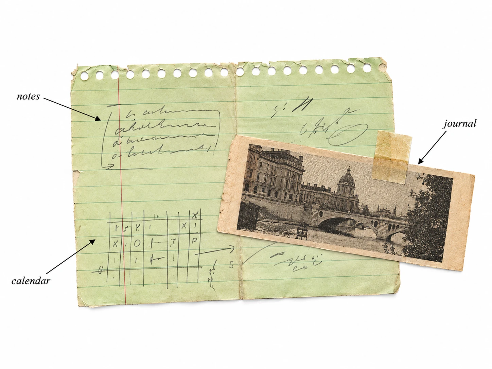

01 / CALENDAR▦
从某一天，
开始记录。
在日历里安排事项，右键补写日记。
那些写过的日子，会留下粉色印记。

01 — A LITTLE SPACE FOR EVERYTHING
日记、日程、临时的念头。
各有位置，也彼此相连。
在日历里安排事项，右键补写日记。
那些写过的日子，会留下粉色印记。
按分类与日期收好笔记。
目录一直在，切换阅读不用来回跳转。
每天一张便签，四种轻柔颜色。
放到桌面置顶，随手写，也随手收好。
02 — TAKE A LOOK INSIDE
核心记录保存在本机，无需创建账号。
笔记、日记和计划，离线照常使用。
自行配置密钥；启用后相关内容会发送给 AI 服务。
03 — MAKE YOURSELF AT HOME
为你的 Mac，留一点空间给自己。
给 Mac 上的每一天。
完成构建验证后开放下载
左上角 → 关于本机，查看芯片类型。
首批安装包正在准备中。你也可以从 GitHub 获取源代码。
A FEW SMALL THINGS
不需要注册。完成安装后，笔记、日记、日历事项和便签都可以离线使用。AI 对话是可选功能，需要联网并自行配置 API 密钥。
保存在当前电脑的用户目录中。数据库是 .smart_notes.db，图片位于 .smart_notes_uploads 文件夹。关闭应用后，备份这两处即可保留记录。目前不提供云同步。
打开 DMG，将 Smart Notes 拖入“应用程序”。本次提供 Apple 芯片（M1 及后续）测试版；尚未完成 Developer ID 签名和 Apple 公证，系统可能阻止启动。请先阅读版本说明并核对下载来源，不要关闭系统安全保护。
AI 功能使用你自行配置的服务密钥。使用笔记 AI 对话时，会发送该笔记相关内容与对话上下文；草莓对话会发送其聊天上下文。不开启 AI 时，核心笔记功能不需要这个服务。